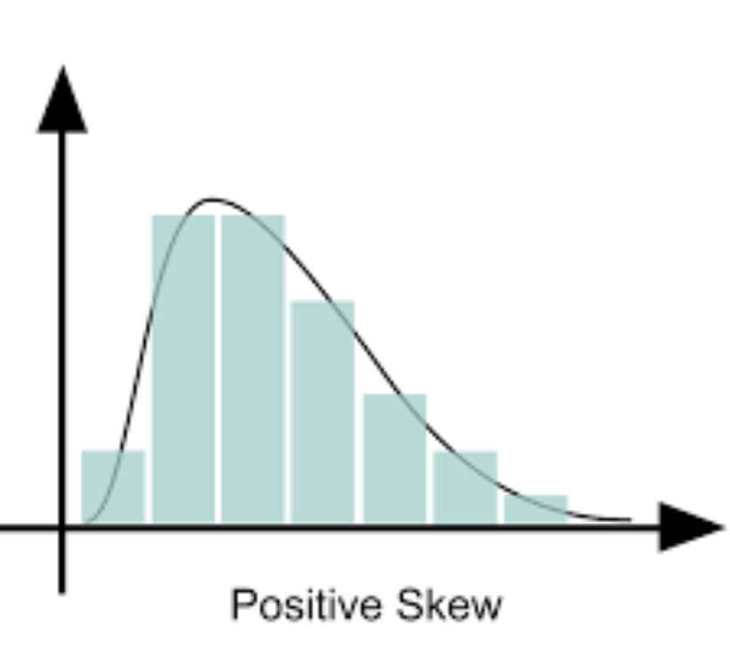
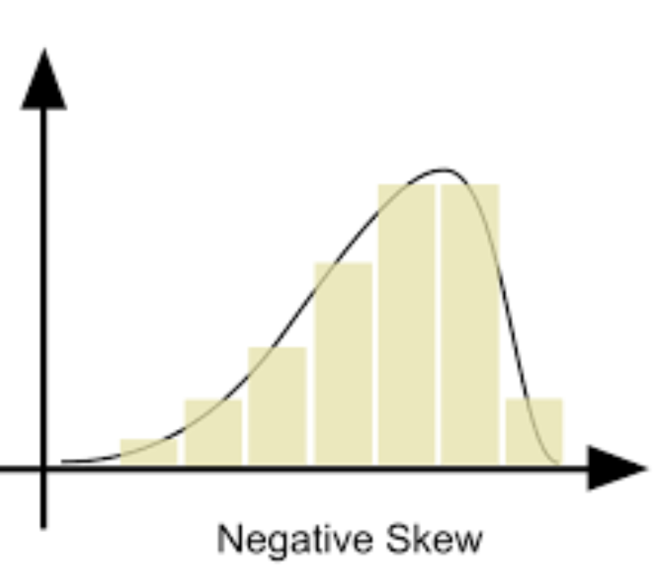

Goal: Master variable identification, understand distributions, calculate central tendency & spread, and create APA-formatted visuals.
"Statistics is just a term for describing the set of concepts and techniques that we use to make sense of large groups of numbers."
Because our brain has a limited capacity to hold many things in focus at once, we simply can't directly process a large group of numbers in a meaningful way. In this module, we learn ways to help our brain see patterns (or stories) out of a large set of seemingly random numbers.
Statistics provides tools to summarize data and draw conclusions from it. In psychology, we collect data from participants, but raw numbers don't tell us much on their own. Statistics helps us find the story hidden in the data.
Purpose: Summarize and organize data
Questions answered:
Examples: Mean, Median, Standard Deviation, Histograms
Purpose: Draw conclusions beyond our data
Questions answered:
Examples: t-tests, ANOVA, Correlation tests
We rarely study everyone. Instead, we study a sample and use it to estimate what the population is like.
Before calculating anything, you must identify what you are studying. In research, we look for relationships between variables.
Use the sentence: "Does [Variable A] depend on [Variable B]?"
Research Question: Does drinking coffee affect how many hours a student sleeps?
Ask yourself: Does coffee consumption depend on sleep? Or does sleep depend on coffee consumption?
DV (Outcome): Hours of Sleep. (This is what we measure to see the effect).
IV (Predictor): Coffee Consumption.
Variables to analyze: Coffee Consumption (IV) and Hours of Sleep (DV).
Often, a researcher wants to compare groups (e.g., "Do Seniors sleep more than Freshmen?").
A researcher calculates that the average anxiety score in their sample is 45.2. Is this descriptive or inferential statistics?
Descriptive. The researcher is simply summarizing the data they collected. They are not yet making claims about a larger population or testing whether differences are statistically significant.
Name the category, not the specific answer.
Identifying the scale tells you which statistics and graphs are appropriate. Remember: N-O-I-R (Nominal, Ordinal, Interval, Ratio).
| Type | Key Feature | Examples | Appropriate Stats |
|---|---|---|---|
| Nominal | Names/Labels only. No order, no math. | Gender, Major, Eye Color, Employment Status | Mode, Frequency counts |
| Ordinal | Ranked order. Intervals unequal. | Class Standing, Single Likert item (1-5), Race placement (1st, 2nd, 3rd) | Mode, Median |
| Interval | Equal intervals. No true zero. | Temperature (°F/°C), IQ scores, Calendar year | Mean, SD, all statistics |
| Ratio | Equal intervals + True zero. | Age, Height, Weight, Reaction time, Number of errors | Mean, SD, all statistics + ratios |
Interval (No true zero): 0°F doesn't mean "no temperature." You can't say 80°F is "twice as hot" as 40°F.
Ratio (True zero): 0 years old means no age. You CAN say someone who is 40 is twice as old as someone who is 20.
In practice, interval and ratio are often treated the same way in psychology. We group them as "Scale" data.
What scale of measurement is "Number of siblings"?
Ratio. There are equal intervals between values (the difference between 1 and 2 siblings is the same as between 3 and 4), AND there is a true zero (0 siblings means no siblings at all). You can meaningfully say that 4 siblings is "twice as many" as 2 siblings.
A distribution shows how data values are spread out. Before calculating statistics, examine the shape of your distribution.
A frequency distribution organizes data by showing how often each value (or range of values) occurs.
| Score | Frequency (f) |
|---|---|
| 5 | 3 |
| 4 | 7 |
| 3 | 12 |
| 2 | 5 |
| 1 | 3 |
| Total | N = 30 |
When data has many values (e.g., ages 18-65), group them into bins:
| Age Range | Frequency |
|---|---|
| 18-24 | 15 |
| 25-34 | 22 |
| 35-44 | 18 |
| 45-54 | 10 |
The normal distribution (bell curve) is the most important distribution in statistics. Many psychological variables are approximately normally distributed.
Skewness describes the asymmetry of a distribution. The "tail" tells you the direction.
Tail points RIGHT (toward high values)
Mean > Median > Mode
Example: Income (most people earn moderate amounts, few earn millions)
Tail points LEFT (toward low values)
Mean < Median < Mode
Example: Easy exam scores (most score high, few score low)
Kurtosis describes how peaked or flat a distribution is, and how heavy the tails are.
Housing prices in a city: most homes cost $200,000-$400,000, but a few mansions cost $2-5 million. What type of skew would this distribution have?
Positive skew (right skew). The expensive mansions create a long tail extending toward the high end (right side). The mean would be pulled up by those expensive homes, making the median a better measure of the "typical" home price.
Two key questions when summarizing data: Where is the center? and How spread out are the scores?
| Measure | What It Is | When to Use | Limitation |
|---|---|---|---|
| Mean | Sum of all scores ÷ N | Scale data with normal distribution | Pulled by outliers/skew |
| Median | Middle score when sorted | Ordinal data OR skewed scale data | Ignores actual values |
| Mode | Most frequent score | Nominal (categorical) data | May not exist or have multiple |
Salaries: $40K, $45K, $50K, $55K, $500K
Mean = ($40K + $45K + $50K + $55K + $500K) ÷ 5 = $138K
Median = $50K (middle value)
The mean ($138K) suggests everyone earns well over $100K, but 4 out of 5 people earn under $60K! The median is more representative here.
Central tendency alone doesn't tell the whole story. Two datasets can have the same mean but very different spreads.
| Measure | Formula | What It Tells You |
|---|---|---|
| Range | Maximum − Minimum | Total spread; sensitive to outliers |
| Variance | Average of squared deviations from mean | Spread in squared units (hard to interpret) |
| Standard Deviation (SD) | √Variance | Average distance from the mean (same units as data) |
Your assignment may ask you to show the "Calculation Process." Do not just write the answer.
Data: 2, 4, 6
Step 1: Mean (M) = (2+4+6)/3 = 4
Step 2: Deviations (X - M)
2 - 4 = -2
4 - 4 = 0
6 - 4 = +2
Step 3: Squared Deviations
(-2)² = 4
(0)² = 0
(+2)² = 4
Sum of Squares (SS) = 4 + 0 + 4 = 8
Step 4: Variance (SS ÷ (N-1))
8 ÷ (3-1) = 8 ÷ 2 = 4
Step 5: Standard Deviation (√Variance)
√4 = 2
Report: Mean ± SD
"M = 75.3, SD = 12.4"
Report: Median (Range)
"Mdn = 45, Range = 12-89"
Report: Mode, Frequencies (%)
"Mode = Mac (62%)"
Dataset A: 48, 49, 50, 51, 52 (Mean = 50)
Dataset B: 20, 35, 50, 65, 80 (Mean = 50)
Both have the same mean. Which has the larger standard deviation?
Dataset B has a much larger standard deviation. The scores are spread far from the mean (20 and 80 are 30 points away), while Dataset A's scores only deviate by 1-2 points from the mean. This illustrates why we need measures of spread—the mean alone doesn't show how variable the data is.
The type of graph depends on your data type and what you want to show.
Use for: Categorical (Nominal) data
Visual: Bars DO NOT touch
Example: Computer type preferences
Use for: Scale/Continuous data
Visual: Bars TOUCH
Example: Age distribution
Use for: Categorical data (parts of a whole)
Visual: Slices = percentages
Example: Major distribution
| Data Type | Best Graph | Example |
|---|---|---|
| Nominal (categories) | Bar graph or Pie chart | Favorite color, Major |
| Scale (continuous) | Histogram | Test scores, Age, Height |
| Frequencies/Counts | Bar graph (categories) or Histogram (ranges) | Number per group |
APA tables are minimalist. Follow these strict rules to avoid point deductions:
| Table 1 Descriptive Title Goes Here in Italics |
||
|---|---|---|
| Category | Frequency | Percentage |
| Category A | 10 | 50% |
| Category B | 10 | 50% |
| Total | 20 | 100% |
You want to display how many students prefer each type of study location (library, dorm, coffee shop, home). What type of graph should you use?
Bar graph (or pie chart). Study location is a categorical/nominal variable—the categories are distinct and have no numerical order. The bars should NOT touch. A pie chart would work if you want to emphasize what proportion of the whole each category represents.
=AVERAGE(B2:B15)).Use COUNTIF to count how many times each category appears:
If Column A contains computer types (Mac, PC, Mac, PC, Linux...):
| Category | Formula | Result |
|---|---|---|
| Mac | =COUNTIF(A:A, "Mac") | 15 |
| PC | =COUNTIF(A:A, "PC") | 22 |
| Linux | =COUNTIF(A:A, "Linux") | 8 |
If you have a wide range of continuous data (like Age 18-60), you must create Bins (Groups).
To count values in specific ranges:
You have data in column B (rows 2-50) showing test scores. Write the Excel formula to find the standard deviation.
=STDEV.S(B2:B50)
We use STDEV.S (not STDEV.P) because we're working with a sample, not the entire population. The "S" stands for "sample."
By the end of this module, you should be able to: